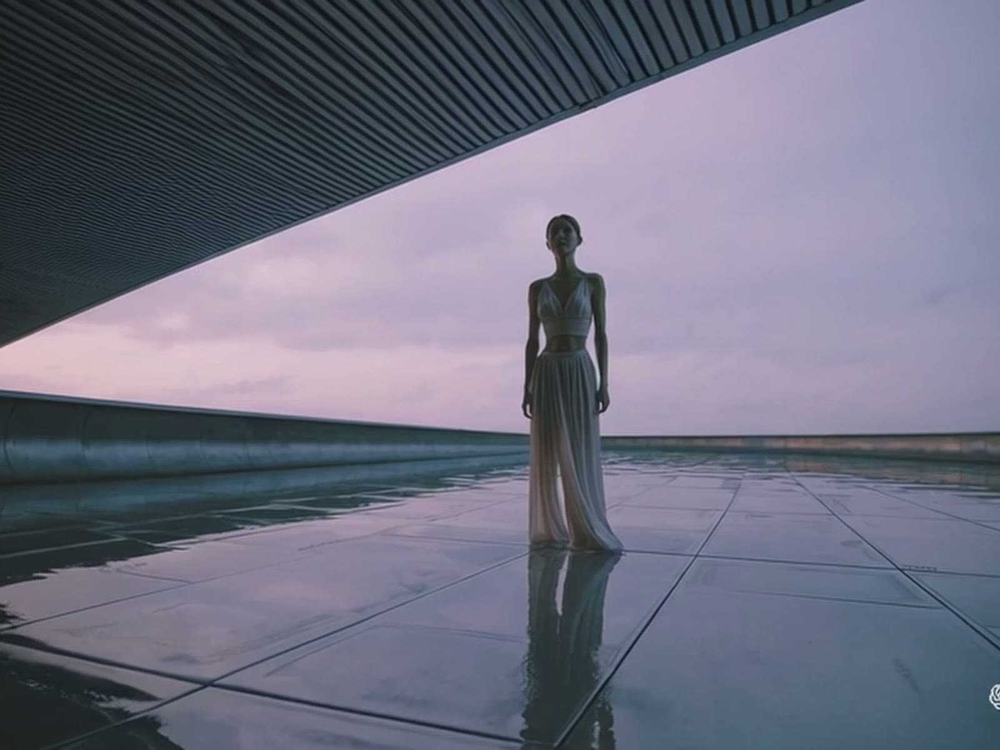

I'm Kristján Ernir. I handle development and strategy, design, and production. I produce films and television.

Designer, producer, technology expert.
I'm Kristján Ernir. I handle development and strategy, design, and production. I produce films and television.